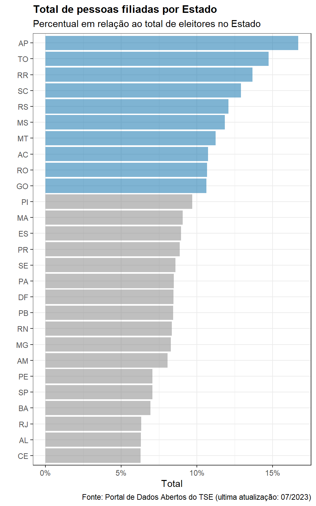

library(tidyverse)
library(piggyback)
library(vroom)
library(knitr)
library(janitor)
library(readxl)
library(geobr)Filiação Partidária no Brasil
Trabalho Final - R4DS I (Curso-R)
Introdução
Esta é uma análise dos dados sobre a filiação partidária no Brasil. A base utilizada foi extraída diretamente do Portal de Dados Abertos do TSE, que disponibiliza uma série de informações sobre as eleições brasileiras e o eleitorado.
Particularmente, estamos interessado em explorar de maneira geral o perfil das pessoas filiadas a partidos políticos tendo em vista algumas características, tais como partido ao qual se filiou, zona eleitoral (e, por conseguinte, município e Estado), gênero, faixa etária, estado civil e grau de instrução.
O conjunto de dados Filiação partidária mensal contém as informações mais recentes sobre essas características e será, portanto, utilizado aqui. Cabe ressaltar que, no momento em que realizamos esta análise, os valores estavam atualizados para o mês de julho de 2023.
Pacotes utilizados
Para realizar as análises utilizamos os pacotes listados abaixo:
Importação da base de dados
df <- read_delim("dados/filiado_mensal.csv.zip", delim = ";",
locale = locale(encoding = "latin1")) |>
janitor::clean_names()Já na importação utilizamos a função janitor::clean_names() para deixar o nome das colunas no padrão snake_case.
Alterando o texto das linhas
Conforme o texto das linhas de todas as colunas estava em caixa alta, decidimos alterar. Com a função str_to_title somente a primeira letra de cada palavra é maiúscula.
dados <- df |>
mutate(across(
.cols = estado_civil:grau_de_instrucao,
.fns = str_to_title
))Optamos, também, por fazer uma alteração nas categorias da variável gênero.
dados <- dados |>
mutate(genero = case_when(
genero == "Feminino" ~ "Mulher",
genero == "Masculino" ~ "Homem"
))Explorando nossa base
Vamos olhar agora para alguns dados mais gerais sobre a nossa base de dados.
Total de pessoas filiadas
Abaixo temos uma tabela com o total de pessoas filiadas atualmente no Brasil. Cabe lembrar que todos os dados desta análise fazem referência ao mês de julho de 2023.
dados |>
summarise(total_filiados = sum(quantidade_de_filiados)) |>
knitr::kable(caption = "**Tabela 1: Total de pessoas filiadas**",
col.names = "Total",
format.args = list(decimal.mark = ",", big.mark = "."),
align = "c")| Total |
|---|
| 15.780.983 |
Total de pessoas filiadas por partido
dados |>
# Agrupando por partido
group_by(sigla_partido) |>
# Somando o total de pessoas filiadas
summarise(total_filiados = sum(quantidade_de_filiados)) |>
# Ordenando pelo total de pessoas filiadas (maior para o menor)
arrange(desc(total_filiados)) |>
knitr::kable(caption = "**Tabela 2: Total de pessoas filiadas por partido**",
col.names = c("Partido", "Total"),
format.args = list(decimal.mark = ",", big.mark = "."),
align = "c")| Partido | Total |
|---|---|
| MDB | 2.043.709 |
| PT | 1.607.248 |
| PSDB | 1.311.872 |
| PP | 1.274.965 |
| PDT | 1.108.356 |
| UNIÃO | 1.049.152 |
| PTB | 1.035.759 |
| PODE | 803.757 |
| PL | 760.995 |
| PSB | 620.376 |
| REPUBLICANOS | 493.437 |
| CIDADANIA | 438.782 |
| PSD | 402.375 |
| PCDOB | 397.736 |
| SOLIDARIEDADE | 377.573 |
| PV | 352.803 |
| PATRIOTA | 322.447 |
| PSOL | 291.378 |
| AVANTE | 215.396 |
| PMN | 204.357 |
| AGIR | 191.974 |
| DC | 172.888 |
| PRTB | 143.989 |
| PMB | 48.040 |
| REDE | 41.959 |
| NOVO | 30.686 |
| PSTU | 15.133 |
| PCB | 12.324 |
| UP | 6.711 |
| PCO | 4.775 |
| PSC | 31 |
Nem sempre uma tabela é a melhor maneira de analisar nossos dados. As visualizações gráficas, ao contrário, ajudam bastante na interpretação.
dados |>
# Agrupando por partido
group_by(sigla_partido) |>
# Somando o total de pessoas filiadas por partido
summarise(total_filiados = sum(quantidade_de_filiados)) |>
# Iniciando a montagem do gráfico
ggplot() +
# Definino aes
aes(
# Ordenando os partidos a partir do número total de pessoas filiadas
x = reorder(sigla_partido, +total_filiados),
# Alterando a escala para milhões
y = total_filiados/1e6) +
# Definindo a geometria
geom_col(aes(fill = sigla_partido),
# Alterando a transparência do preenchimento
alpha = .5,
# Omitindo a legenda
show.legend = FALSE) +
# "Girando" nosso gráfico para facilitar a visualização
coord_flip(clip = "on") +
# Destacando os partidos com mais de um milhão de pessoas filiadas
scale_fill_manual(values = c("MDB" = "#0069A8",
"PT" = "#0069A8",
"PSDB" = "#0069A8",
"PP" = "#0069A8",
"PDT" = "#0069A8",
"UNIÃO" = "#0069A8",
"PTB" = "#0069A8")) +
labs(
x = "",
y = "Total (em milhões)",
title = "Total de Pessoas Filiadas por Partido",
subtitle = "Em milhões de pessoas filiadas",
caption = "Fonte: Portal de Dados Abertos do TSE (ultima atualização: 07/2023)") +
theme_bw() +
theme(plot.title = element_text(size = 12,
face = "bold"))Medidas descritivas sobre o total de pessoas filiadas por partido
dados |>
# Agrupando por partido
group_by(sigla_partido) |>
# Somando o total de pessoas filiadas
summarise(total = sum(quantidade_de_filiados)) |>
# Calculando as medidas descritivas
summarise(media = mean(total),
mediana = median(total),
variancia = var(total),
desvio_padrao = sd(total)) |>
knitr::kable(caption = "**Tabela 3: Medidas descritivas sobre o total de pessoas filiadas por partido**",
col.names = c("Média", "Mediana", "Variância", "Desvio Padrão"),
format.args = list(decimal.mark = ",", big.mark = "."),
align = "c")| Média | Mediana | Variância | Desvio Padrão |
|---|---|---|---|
| 509.064 | 352.803 | 282.602.944.107 | 531.604,1 |
Veja que a média de pessoas filiadas por partido é de cerca de 509 mil. O desvio padrão corresponde a cerca de 531 mil pessoas. A mediana nos mostra que metade dos partidos políticos no Brasil possui 352.803 mil pessoas filiadas ou mais.
Total de pessoas filiadas por Estado
Para visualizar essa informação, é melhor verificar o percentual de filiados em relação ao total de eleitores do Estado, pois, caso contrário, naturalmente os estados com mais eleitores apresentariam a maior quantidade de filiados.
Para fazer isso, vamos adicionar o eleitorado total de cada Estado ao nosso dataset original utilizando os dados do TSE. Conforme estamos explorando os números da filiação partidária para o mês de julho de 2023, extraímos os dados relativos ao total de eleitores por Estado para o mesmo período. O conjunto de dados Eleitorado mensal disponível na página principal do Portal de Dados Abertos do TSE fornece-nos essa informação.
eleitorado_total <- read_delim("dados/eleitorado_mensal.csv.zip") |>
janitor::clean_names()Juntando as bases
Aqui, vamos juntar o dataset acima (que contém o número total de eleitores para cada Estado) e nosso dataset principal em um só. Usaremos, para isso, a função left_joint().
dados_eleitorado_total <- eleitorado_total |>
# Função para juntar as bases
left_join(
# Juntando a base "pop_total" na base "dados" a partir da coluna "uf"
dados, by = c("uf"))Visualização gráfica do percentual de pessoas filiadas por Estado
dados_eleitorado_total |>
# Agrupando por Estado e pela população total
group_by(uf, quantidade_de_eleitor) |>
# Somando o total de pessoas filiadas por Estado
summarise(total_filiados = sum(quantidade_de_filiados)) |>
# Retirando ZZ (exterior)
filter(uf != "ZZ") |>
# Fazendo o percentual de filiados em relação à pop. total do Estado
mutate(perc_filiados = total_filiados/quantidade_de_eleitor) |>
# Iniciando a montagem do gráfico
ggplot() +
# Definindo aes
aes(
# Ordenando os partidos a partir do número total de pessoas filiadas
x = reorder(uf, +perc_filiados),
y = perc_filiados) +
# Definindo a geometria
geom_col(
# Definindo o preenchuimento pela sigla de cada UF
aes(fill = uf),
# Alterando a transparência do preenchimento
alpha = .5,
# Omitindo a legenda
show.legend = FALSE) +
# "Girando" nosso gráfico para facilitar a visualização
coord_flip() +
# Destacando os Estado com mais de 10% da população filiada
scale_fill_manual(values = c("AP" = "#0069A8",
"TO" = "#0069A8",
"RR" = "#0069A8",
"SC" = "#0069A8",
"RS" = "#0069A8",
"MS" = "#0069A8",
"MT" = "#0069A8",
"AC" = "#0069A8",
"RO" = "#0069A8",
"GO" = "#0069A8")) +
# Colocando a escala em porcentagem
scale_y_continuous(labels = scales::percent) +
theme_bw() +
labs(
x = "",
y = "Total",
title = "Total de pessoas filiadas por Estado",
subtitle = "Percentual em relação ao total de eleitores no Estado",
caption = "Fonte: Portal de Dados Abertos do TSE (ultima atualização: 07/2023)") +
theme(plot.title = element_text(size = 12, face = "bold"))
Medidas descritivas sobre o total de pessoas filiadas por Estado
dados |>
# Agrupando por partido
group_by(uf) |>
# Somando o total de pessoas filiadas
summarise(total = sum(quantidade_de_filiados)) |>
# Calculando as medidas descritivas
summarise(media = mean(total),
mediana = median(total),
variancia = var(total),
desvio_padrao = sd(total)) |>
knitr::kable(caption = "**Tabela 3: Medidas descritivas sobre o total de pessoas filiadas por Estado**",
col.names = c("Média", "Mediana", "Variância", "Desvio Padrão"),
format.args = list(decimal.mark = ",", big.mark = "."),
align = "c")| Média | Mediana | Variância | Desvio Padrão |
|---|---|---|---|
| 563.606,5 | 321.397,5 | 373.597.860.844 | 611.226,5 |
Veja que a média de pessoas filiadas por Estado é de cerca de 563 mil. O desvio padrão corresponde a cerca de 611 mil pessoas. A mediana nos mostra que metade dos Estado brasileiros possuem cerca de 321.397 mil pessoas filiadas ou mais.
Mapa da do percentual de pessoas filiadas por Estado
Para ajudar na visualização de quais Estado (e regiões) do Brasil o percentual de pessoas filiadas é maior ou menor, apresentamos um mapa.
Importando base de dados com as coordenadas dos Estados
shape <- geobr::read_state(code_state = "all", year = 2010)Criando objeto com o percentual de filiados por Estado
perc_filiados_uf <- dados_eleitorado_total |>
# Agrupando por Estado e população total
group_by(uf, quantidade_de_eleitor) |>
# Somando o total de pessoas filiadas
summarise(total_filiados = sum(quantidade_de_filiados)) |>
# Criando coluna com o percentual de pessoas filiadas em relação à população
# total do Estado
mutate(perc_filiados = total_filiados/quantidade_de_eleitor)Adicionando as coordenadas de cada Estado ao dataset acima
# Criando objeto que guarda a prop. de pessoas filiadas e as coordenadas de cada Estado
shape_uf <- shape |>
# Cria uma coluna de nome "uf" com os valores da coluna "abbrev_state"
mutate(uf = abbrev_state) |>
# Função para juntar as bases
left_join(
# Juntando a base "shape" na base "prop_filiados_uf" a partir da coluna "uf"
perc_filiados_uf, by = c("uf")) |>
# Selecionando somente as colunas de interesse para fazer o mapa
select(uf, perc_filiados, geom)Fazendo o mapa
shape_uf |>
ggplot() +
# Definindo a geometria do mapa
geom_sf(
# Preenchendo os Estado com os valores da coluna "perc_filiados"
aes(fill = perc_filiados)) +
scale_fill_continuous(type = "viridis", labels = scales::percent) +
labs(
title = "Mapa do percentual de filiados por Estado",
subtitle = "Em relação ao total de eleitores de cada Estado",
fill = "Percentual"
) +
theme_bw() +
theme(plot.title = element_text(face = "bold"))O mapa acima permite visualizar com mais facilidade quais Estados e regiões do Brasil possuem a maior percentual de pessoas filiadas em relação ao total de eleitores do Estado. Facilmente identificamos, por exemplo, que Tocantins e Amapá são os Estados com o maior percentual.
O perfil geral das pessoas filiadas
Vamos explorar, agora, o perfil das pessoas filiadas a partidos políticos tendo em vista as variáveis gênero, faixa etária, escolaridade e estado civil.
Gênero e faixa etária
Abaixo, apresentamos um gráfico do total de pessoas filiadas a partidos políticos agrupado por gênero e faixa etária.
dados |>
# agrupando por genero e faixa etaria
group_by(genero, faixa_etaria) |>
# alterando a escala da quantidade de filiados
summarise(total_filiados = sum(quantidade_de_filiados)) |>
# excluindo a faixa etária "Inválida"
filter(faixa_etaria != "Inválida") |>
ggplot() +
aes(
x = faixa_etaria,
y = total_filiados,
fill = genero) +
geom_col(
# Criando uma coluna para cada gênero
position = "dodge",
# Alterando a transparência do preenchimento
alpha = .5,
# Alterando largura das colunas
width = .9) +
scale_fill_manual(
values = c(Mulher = "#0038A8",
Homem = "#00C19F",
`Não Informado` = "gray")) +
theme_bw() +
theme(axis.text.x = element_text(angle = 45, hjust = 1)) +
labs(
x = "",
y = "",
title = "Total de pessoas filiadas a partidos políticos",
subtitle = "Agrupado por Gênero e Faixa Etária",
caption = "Fonte: Portal de Dados Abertos do TSE (ultima atualização: 07/2023)",
fill = "Gênero"
) +
scale_y_continuous(
# Colocando a escala em números
labels = scales::number,
# Definindo início e fim do eixo y
limits = c(0, 3000000),
# Definindo início e fim do eixo y e de quanto em quanto
breaks = seq(0, 3000000, by = 500000))Gênero e escolaridade
Agora, apresentamos um gráfico do total de pessoas filiadas a partidos políticos agrupado por gênero e escolaridade.
dados |>
# Agrupando por genero e faixa etaria
group_by(genero, grau_de_instrucao) |>
# Somando o total de pessoas filiadas
summarise(total_filiados = sum(quantidade_de_filiados)) |>
mutate(
# Alterando a ordem das categorias da coluna "grau_de_instrucao" usando a função "factor"
grau_de_instrucao = factor(grau_de_instrucao,
levels=c("Não Informado",
"Analfabeto",
"Lê E Escreve",
"Ensino Fundamental Incompleto",
"Ensino Fundamental Completo",
"Ensino Médio Incompleto",
"Ensino Médio Completo",
"Superior Incompleto",
"Superior Completo"))) |>
ggplot() +
# Definindo aes
aes(
x = grau_de_instrucao,
y = total_filiados,
fill = genero) +
# Definindo a geometria
geom_col(
# Criando uma coluna para cada gênero
position = "dodge",
# Alterando a transparência do preenchimento
alpha = .5,
# Alterando largura das colunas
width = .9) +
# Definindo manualmente as cores das colunas de cada gênero
scale_fill_manual(
values = c(Mulher = "#0038A8",
Homem = "#00C19F",
`Não Informado` = "gray")) +
theme_bw() +
theme(axis.text.x = element_text(angle = 45, hjust = 1)) +
labs(
x = "",
y = "",
title = "Total de pessoas filiadas a partidos políticos",
subtitle = "Agrupado por gênero e grau de instrução",
caption = "Fonte: Portal de Dados Abertos do TSE (ultima atualização: 07/2023)",
fill = "Gênero"
) +
scale_y_continuous(
# Colocando a escala em números
labels = scales::number,
# Definindo início e fim do eixo y
limits = c(0, 2500000),
# Definindo início e fim do eixo y e de quanto em quanto
breaks = seq(0, 2500000, by = 500000))Gênero e estado civil
Por fim, apresentamos um gráfico do total de pessoas filiadas a partidos políticos agrupado por gênero e estado civil.
dados |>
# Agrupando por genero e faixa etaria
group_by(genero, estado_civil) |>
# Somando o total de pessoas filiadas
summarise(total_filiados = sum(quantidade_de_filiados)) |>
mutate(
# Alterando a ordem das categorias da coluna "estado_civil" usando a função "factor"
estado_civil = factor(estado_civil,
levels=c("Casado",
"Solteiro",
"Divorciado",
"Viúvo",
"Separado Judicialmente",
"Não Informado"))) |>
ggplot() +
# Definindo aes
aes(
x = estado_civil,
y = total_filiados,
fill = genero) +
geom_col(
# Criando uma coluna para cada gênero
position = "dodge",
# Alterando a transparência do preenchimento
alpha = .5,
# Alterando largura das colunas
width = .9) +
scale_fill_manual(
values = c(Mulher = "#0038A8",
Homem = "#00C19F",
`Não Informado` = "gray")) +
theme_bw() +
theme(axis.text.x = element_text(angle = 45, hjust = 1)) +
labs(
x = "",
y = "",
title = "Total de pessoas filiadas a partidos políticos",
subtitle = "Agrupado por gênero e estado civil",
caption = "Fonte: Portal de Dados Abertos do TSE (ultima atualização: 07/2023)",
fill = "Gênero"
) +
scale_y_continuous(
# Colocando a escala em números
labels = scales::number)